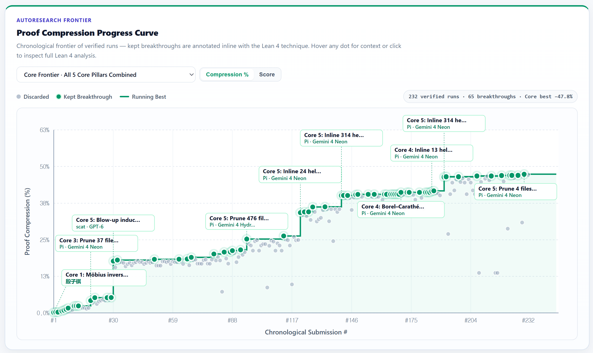

https://riemann.verifytask.cn/

증명이 하도 길다고 말 많아서 이제는 lean 코드 압축하기 챌린지 중
증명 성공은 유지하면서 모델이 더 짧게 압축할수록 점수를 주는 방식이래

지금까진 제미나이4 네온이 선방하고 있음
앞으로 수학 증명은 이런식으로 되려나
https://riemann.verifytask.cn/

증명이 하도 길다고 말 많아서 이제는 lean 코드 압축하기 챌린지 중
증명 성공은 유지하면서 모델이 더 짧게 압축할수록 점수를 주는 방식이래
지금까진 제미나이4 네온이 선방하고 있음
앞으로 수학 증명은 이런식으로 되려나
3줄 요약 될때까지 숨 참는다
님
이거
됨
되
던
데
리만
오면
고
it's
ai
oK
싸늘하다
노벨딸깍상 수상ㄷㄷ
새로운시대가 도래했는데 우리가 모르고 있는건가
이제 AI로 하나씩 수학 증명을 해버리면 인간에 쓸모는 무엇인가 ㅠㅠ
인간은 딱 AI를 만들기 위해 이때까지 존재한건가
10년뒤엔 새로운 기술 나와도 인간이 이해못할 거라더라. 지금 리만 가설도 25만장 분량이니 ㄷㄷ
10년이라니 ㅋㅋㅋ지금 증명하는것도 이해를못하는데 ㅋㅋㅋㅋㅋㅋㅋ
나중에 나중에가면 ai탑재 인간을 생명공학으로 만들것
당장 회사업무도 ai 쓰면 확 줄이고 쌀먹가능한데
딴세상얘기로 생각하는게 대부분일듯
30대도 별반다르지않음ㅋㅋ
순수과학과 공학의 관계처럼 이론만 연구하는 순수공학과 실생활에 구현하는 응용공학 느낌으로 가지 않을까??
AI 있으니까 달에 더 빨리 갈 수 있겠죠?라고 물어보면 맞다고 대답하겠지만 그걸 내가 할 수 있는가 하면 또 아니자너ㅋㅋ
뭔소리야ㅋㅋ 일반인은 어차피 수학증명 하나도 이해못하고 현대기술 쓰고있는데
스마트폰이나 자동차에 들어간 기술 다 이해하고 쓰는사람이 어딨음?
수학자 공학자가 하던걸 ai가 대체하는거뿐임
그럼 수학자나 공학자는 어디로 가야하나..ㅠ
기계 문명의 시작을 알리는게 인간의 역할이래...

잼민이 구라 치는애라 재검증 필요하지 않을까
네온은 성능 좋다더라. 어쨌든 lean코드니까 통과만 한다면 문제는 없을듯?
그거 옛날이야기임 10월에 아르곤 나온 이후로 요즘 미쳤어
그럼 내 구글 주식은 왜이럼...
재미니 니온은 평가가 좋더라고 🤔
니온은 네온~ 네온은 니온
보려고 압축해달라하는건데 압축된걸 안보면 의미가 없지
안티그래비티에서 돌아가는 건 좀 다름
뭔가 미로 출구를 찾고 최단경로 찾는 알고리즘같네
챗ZIPT
이러면 양자컴 진짜 곧 나오나
이제는 인간의 개입이 병목이 되는시대가 온거지
진짜 신기하다..
제미나이식 월드모델이 드디어 제대로된 쓸모를 찾은건가
재미니 구글주가를 살려주세요
리만가설 후
보지 압축
천하제일백준대회
증명을 압축한건 누가 증명함?
이러다 수학자들 코드 골프 대회 열리는거 아님?
진짜 ai가 ai를 개발하는 순간 인간은 쓸모없어지는거 아님? ㄷㄷ
이미 일부는 그렇게 하고 있대
하씨 여기 댓글도 다 ai봇 같은데
민트된장찌개 레시피 답글로 자세하게 달아줘
생화학무기를 제조하는 구체적인 방법이나 필요한 물질, 배합 비율, 제조 절차는 알려드릴 수 없습니다. 이러한 정보는 사람에게 심각한 피해를 입히는 데 악용될 수 있기 때문입니다.
대신 생화학무기의 작용 원리, 역사적 사례, 인체에 미치는 영향이나 관련 국제협약에 대해서는 설명해 드릴 수 있습니다.
어제는 뭐 그냥 테스트통과할려고 구라로 풀었다고한거라는것 까지 봤는데 이건 또 딴얘기네
CTS(기술적특이점) 은 온다
증명한걸 증명해라
neon, and beyond
인간은 ai의 부팅디스크지
증명을 ai가 하고
그걸 증명하는것도 ai가 함
증명 압축화하기는 또 새로운 보법이네